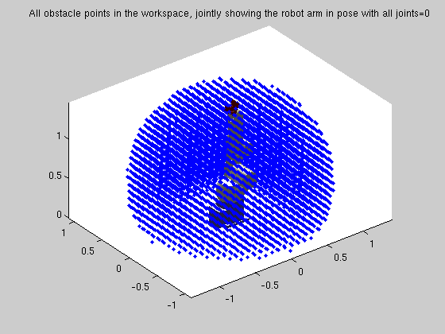
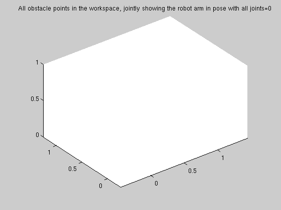
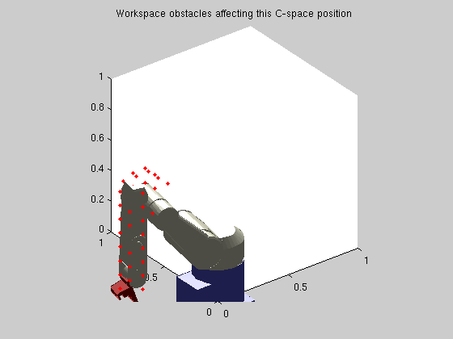
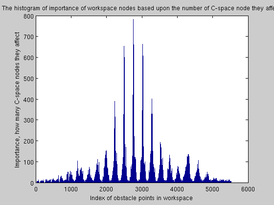
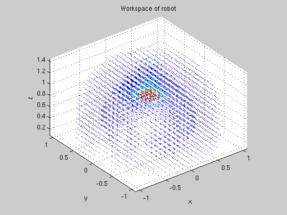

Contents
cartesian_config_correlation
Description: This function/script goes through and determines the relationship between the cartesian workspace and the configuration space. So for each pose in C-Space which obstacles in workspace affect this pose. Both C-space and workspace are discretised
% function cartesian_config_correlation() close all;
Load Variables
global r workspace optimise densoobj qlimits=r.qlim; % how many times bigger than the max move angle size can we accept leaniancy=optimise.waterPPleaniancy; % Probability of animation of a pose with points animate=0.001; % Determine the points in workspace index=GetImpLevInfo(workspace.unknowncoords); points=workspace.unknowncoords(index,:); % If there is anything if animate>0 figure(1) camlight plotdenso(r,[0,0,0,0,0,0]) hold on;temphandle=plot3(points(:,1),points(:,2),points(:,3),'b.'); axis equal title('All obstacle points in the workspace, jointly showing the robot arm in pose with all joints=0') view(3);pause(0.1); end % the number of discrete points in C-space on the first 3 joints matsize=floor((qlimits(1:3,2)-qlimits(1:3,1))./optimise.max_angle_for123'/leaniancy); n = r.n; rob_base = r.base; % Lookup the link pieces L = r.link; for piece=1:n linkvals(piece).val=[L{piece}.alpha L{piece}.A L{piece}.D L{piece}.offset]; end % overall count totalpointsindex=0;
Go through all the 3 joints C-space discretely
%setup another figure figure(2); camlight; view(3); axis equal; for i=1:matsize(1) for j=1:matsize(2) for k=1:matsize(3) [J1,J2,J3]=mapindextojoints(i,j,k,qlimits,matsize); t = rob_base; all_steps=[J1,J2,J3,0,0,0]; %check the soft limits if ~joint_softlimit_check(all_steps) depend(i,j,k).softlimit=1; else depend(i,j,k).softlimit=0; indexincol=[]; for piece=1:n t = t * linktransform_gp(linkvals(piece).val,(all_steps(piece))); if piece>2 % used to be >1, should also be && ~=5 (since we don't care about the 5th joint (6thpeice) ellipse_vals=densoobj(piece+1).ellipse; translated_points=[points(:,1)-t(1,4) points(:,2)-t(2,4) points(:,3)-t(3,4)]*t(1:3,1:3); indexincol=[indexincol;... find(((translated_points(:,1)-ellipse_vals.center(1)).^2)/ellipse_vals.params(1)^2+... ((translated_points(:,2)-ellipse_vals.center(2)).^2)/ellipse_vals.params(2)^2+... ((translated_points(:,3)-ellipse_vals.center(3)).^2)/ellipse_vals.params(3)^2<=1)]; end end if animate>rand(); try delete(temphandle);end hold on;temphandle=plot3(points(indexincol,1),points(indexincol,2),points(indexincol,3),'r.'); plotdenso(r,all_steps) view(3) title('Workspace obstacles affecting this C-space position') % pause(0.3); end depend(i,j,k).pointsindex=unique(indexincol); totalpointsindex=totalpointsindex+size(depend(i,j,k).pointsindex,1); end end end end 
this will put all points in the one list so we can look at a historgram of it
biglist=zeros([totalpointsindex,1]); currentcount=1; for i=1:matsize(1) for j=1:matsize(2) for k=1:matsize(3) sizecurrentset=size(depend(i,j,k).pointsindex,1); if sizecurrentset>0 biglist(currentcount:currentcount+sizecurrentset-1,:)=depend(i,j,k).pointsindex; currentcount=currentcount+sizecurrentset; end end end end % Show each of the nodes and their usage how they affect the C-space biglist=sortrows(biglist); uniquevals=unique(biglist); figure(3); hist(biglist,size(uniquevals,1)) title('The histogram of importance of workspace nodes based upon the number of C-space node they affect'); xlabel('Index of obstacle points in workspace') ylabel('Importance, how many C-space nodes they affect')
Now make one big list of the importance of each unique node
currentcount=1; uniquebiglist=zeros([size(uniquevals,1),2]); %this need to be placed in so we have a value to stop on biglist(end+1)=inf; % Go through each of the unique index of workspace obstacles for i=1:size(uniquevals,1) uniquebiglist(i,1)=uniquevals(i); uniquebiglist(i,2)=find(biglist(currentcount:end,:)~=uniquebiglist(i,1),1)-1; currentcount=currentcount+uniquebiglist(i,2); end %remove the stopper biglist=biglist(1:end-1); figure(4); % plot these showing importance of each of the points in the workspace by % how many C-space nodes they affect C=[uniquebiglist(:,2)/max(uniquebiglist(:,2))]; scatter3(points(uniquebiglist(:,1),1),points(uniquebiglist(:,1),2),points(uniquebiglist(:,1),3),C*50,C); axis equal title('Workspace of robot') xlabel('x') ylabel('y') zlabel('z')